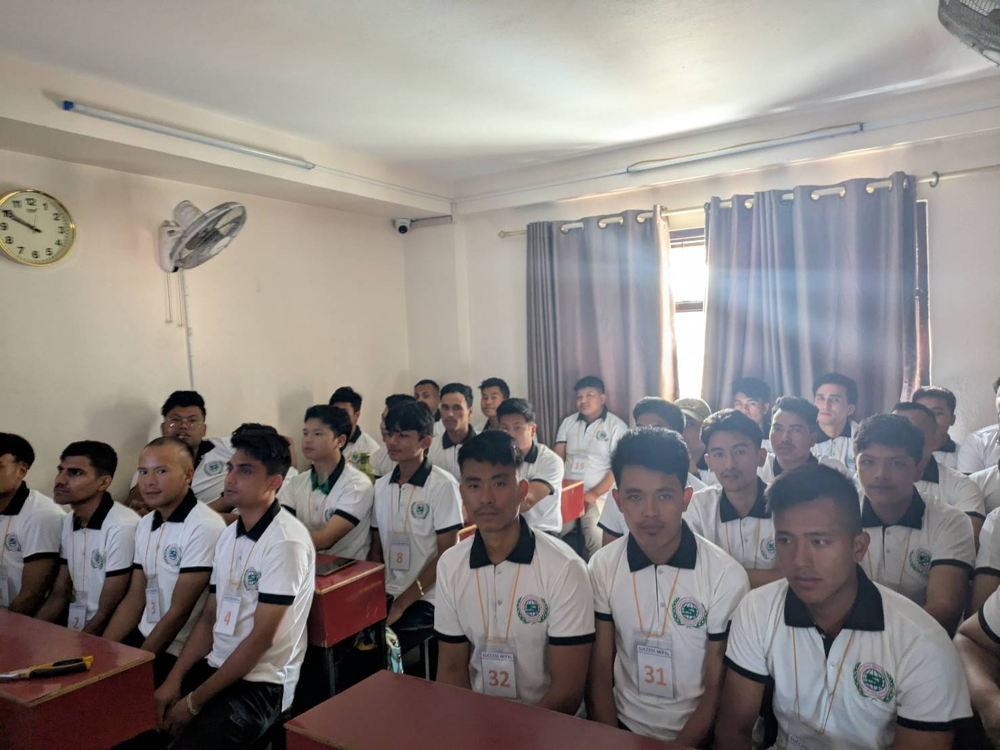

提携ネットワーク
現地から日本まで、信頼でつながるパートナーシップ
なぜ、ミスマッチが
起こりにくいのか。
採用企業と外国人材をつなぐのは、仲介業者ではなく「信頼のネットワーク」です。
現地送り出し機関から国内行政機関まで、一気通貫の連携体制を構築しています。
海外提携機関
ネパール国内の信頼できる送り出し機関と長期パートナーシップを締結しています。

写真：Success Nepal Manpower Agency 自社日本語学校・授業の様子ネパール・カトマンズ
Success Nepal Manpower Agency
2011年設立のネパール政府公認送り出し機関。カトマンズを拠点に建設・介護・食品加工分野で多数の人材を日本へ送り出してきた信頼パートナーです。自社日本語学校を運営し、渡航前からN4水準の語学教育を徹底。失踪者ゼロの実績が品質の証です。
- 設立 2011年 — 15年以上の送り出し実績
- 自社日本語学校でN5→N4取得を支援
- 食品加工分野 22名の送出実績あり
- 失踪者ゼロ — 徹底した事前スクリーニング
ネパール
その他認定送り出し機関
政府認定を受けた複数の現地送り出し機関と連携。面談・スクリーニング・日本語事前教育を現地で実施し、入国前から採用企業のニーズに合った人材を厳選します。
ネパール
日本語学校・訓練機関
ネパール国内の日本語学校・職業訓練機関と提携し、渡航前の語学力・職業スキルを担保しています。N4以上の日本語能力を持つ人材を優先的にご紹介できます。
国内提携機関
在留資格・生活支援・業種専門の機関と連携し、入国後の定着を支えます。
行政・法務
行政書士・社労士事務所
在留資格申請・変更・更新を専門家と連携してスピーディに対応。書類不備による機会損失を防ぎます。
住居
外国人対応不動産
外国籍でも審査が通りやすい物件を複数確保。入社前に住まいを用意し、安心して働き始められる環境を整えます。
モビリティ
自動車リース会社
免許取得・自動車リースの手配を代行。特に農業・介護など車通勤が必須の職場への入社をスムーズにサポートします。
医療
多言語対応医療機関
健康診断・緊急時の受診に備え、外国語対応可能なクリニックと連携。医療面の不安を取り除きます。
教育
日本語学習支援機関
入社後の日本語継続学習をサポート。オンライン・通学型の学習機関をご紹介し、業務遂行能力の向上を支援します。
コミュニティ
多文化共生支援団体
大阪市内の多文化共生推進団体・外国人支援NPOと連携し、社会的なつながりの場を提供。孤立による離職を防ぎます。
業種別連携体制
介護
特定技能・技能実習に対応。介護施設・老人ホーム・デイサービスへの紹介実績多数。
外食
飲食店・レストランチェーンへの紹介。調理・ホールスタッフ・厨房補助など幅広く対応。
農業
季節労働・通年雇用ともに対応。農場・ハウス農業・農産物加工施設への紹介実績あり。
建設
鉄筋・塗装・内装・土木など幅広い職種に対応。特定技能・技術ビザの両方で紹介可能。